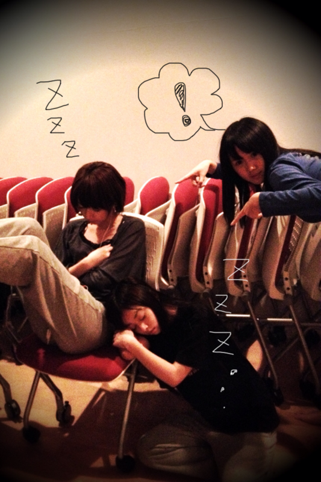

| 2011/11 22 Tue | 9回目*marika |
いつも読んでくださってる方、ありがとうございます*
さむかったなぁ。
明日はもっとさむくなるそうです~
あぁ...こたつ。こたつの中入りたい...。
みなさん。コメントありがとうございました***
ほんとうにうれしいことばっかりで.........!!!!!!
全部うれしい--------!!!!
みなさんだいすきやー!!!!
みなさんからのコメントはほんとうに
元気をもらえるし、自然と笑顔になります。
みなさんは私のBloGを見て
元気になってほしいです。
これからも更新頑張ります!!
お仕事も勉強頑張ります!!
みなさんも一緒に頑張りましょう!!**
.................................................
質問お答えするじょ><*
・男性にされたい告白の仕方は？
ストレートにすきって言ってほしいなぁ...
でもきっと、どれもうれしいです。
・万理華って呼び捨てしてもいい？
もちろん!うれしいですよ♪
・好きな食べ物は絞れた？
うーん...。絞れません...言ったの全部すきだからなぁ笑
・好きなアーティストは？
上原ひろみさん
GalileoGalileiさん
flumpoolさん
ASIAN KUNG-FU GENERATIONさん
...など他にもいろいろ聴きます=3
・好きな音楽のジャンルは？
ロック、ジャズ
・好きなアイドルは?
小さい頃にモー娘。さんのライブ行ったことあります!
・好きな花は何？
お花の種類は詳しくないのですが
お花はどれも好きです!!あっ、葉っぱも好きです。
・好きな男性のタイプは？
笑顔がすてきな人!
・好きな男性のファッションは？
ナチュラルでシンプルで古着っぽい感じ*
・目指してるアイドルってどんなアイドル？
いつでも自然体で笑顔がきらきらで
いつまでも愛されるような存在になりたいです。
・好きなキャラクターは？
絵本のバムとケロ
トムとジェリー
パワーパフガールズ
・憧れの芸能人は？
宮崎あおいさん
私の理想です!!!!!
きゃりーぱみゅぱみゅさん
個性的でときどきぶっとんだ感じがかわいいです!!
・好きな映画は？
メリーポピンズ
サウンドオブミュージック
バックトゥーザフューチャー
ハイスクールミュージカル
意外ですか~??DVD持ってます。
家族全員映画好きです!
・苦手な食べ物は？
貝類...きのこ類...
・好きな色は？
全色好きです♥
・ディズニーキャラクターで好きなのは？
バンビちゃんかな*
・好きなスイーツは？
チーズケーキ
ミルクレープ
あんみつ
抹茶味のスイーツ
・雨の日は好き?
じめじめしますよね;(
でもきらいじゃないです。
・一番よく一緒にいるメンバーは？
みーんな仲良しよ-♥
となりにいる人にちょっかい出しちゃう←
ねねとは特に仲良いです。
・好きなブランドは？
ラフォーレ派です。
BEAMS BOY
KAPITAL
Par Avion
RNA
jouetie
好きです。
あと古着!!
・プロ野球とかって見たりする？
スポーツニュースでは阪神に目が行ってしまいます。
１回観に行ったことありますよ-!!
はい!以上です。
あいまいな回答があってごめんなさい。!
私のことちょっと知ることできましたね:D!!
.................................................
そういえば!昨日の乃木坂って、どこ?で
初めてスタジオ出演しました---☆
楽しかったです。
気合い入れてお気に入りの履いていったら
噛まれてしまいました笑
丈夫なブーツでよかった!あーよかった!
もっと演技がんばります!!
ではでは!しゃし-ん

ダイブしてるのはろってぃです笑
ちはるとまりかあげあげ--- 撮影ねねころりん。←

おつかれ様*
ななみん、ねね寝ちゃった!せいらりんびっくり笑!パシャリ＊
写真撮るの楽しい^^
また更新しますね***
ありがとうございました。
ベビたん*****bA by marika